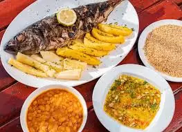

Página 3 - Receita de Mufete com lista
Mufete (comida angolana)

Ingredientes
- 1 peixe carapau ou tilápia inteiro
- 2 bananas-da-terra médias
- 2/3 de batata-doce
- 2/3 de mandioca
- farinha musseque (mandioca moída torrada)
- 1 colher de chá de sal
- 180 g de feijão-manteiga(amarelo) ou feijão branco, demolhado por pelo menos 2 horas ou durante a noite
- pimenta-do-reino a gosto
- 1 cebola pequena picada finamente
- 50 ml de óleo de palma (Azeite de dendém)
- 1 folha de louro
- 1 dente de alho amassado
- suco de 1 limão
- 1 cebola picada
- um punhado de salsa picada
- um pouco de suco de limão
- colher de sopa de vinagre
- 1 colher de sopa de azeite ou óleo vegetal
Modo de preparo
- Depois que o feijão estiver de molho, descarte a água e coloque o feijão e a folha de louro em uma panela com água suficiente para cobrir e deixe ferver por 30 minutos. Escorra.
- Adicione 475 ml (2 xícaras) de água, o azeite de dendê no feijão e cozinhe em fogo baixo até ficar apurado (bem incoporado). Ajuste o tempero a gosto com sal.
- Limpe o peixe e faça cortes na pele dos dois lados. Em uma tigela pequena, misture 1 colher de chá de sal, o suco de limão, o azeite e o alho amassado e esfregue essa mistura no interior do peixe e nos cortes na pele. Deixe marinar por 15 minutos.
- Em uma panela grande com água e sal coloque, ainda com as cascas, as batatas-doces, as mandioca e as bananas-da-terra, pré-lavadas, e ferve-as até ficarem macias. Depois de prontas, escorra a água, deixa arrefecer, descasque-as e reserve-as.
- Acenda uma churrasqueira (ou pré-aqueça a grelha em fogo médio) e coloque o peixe marinado sobre o fogo de carvão ou sob a grelha por 3 a 5 minutos de cada lado, ou até que esteja cozido.
- Enquanto o peixe está assando, prepare o vinagrete. Em uma tigela pequena, misture a cebola picada, a salsa, o suco de limão, o vinagre e o azeite ou óleo vegetal. Tempere com sal a gosto.
- Para servir, corte as bananas-da-terra, as batatas-doces e a mandioca em pedaços a sua maneira.
- Depois que tudo estiver cozido, reúna o peixe, a batata-doce, a mandioca, a banana-da-terra e o feijão em um prato grande para compartilhar. Coloque delicadamente o vinagrede sobre o peixe, com uma rodela de limão para decorar, e polvilhe farinha musseque sobre o feijão.
- E está pronto, agora é só se deliciar com este magnífico prato, bom apetite!
Fonte:
https://angola24horas.com/mais/mais-categorias/culinaria/item/9693-receita-de-mufete-de-peixe-carapau
Voltar ao menu principal